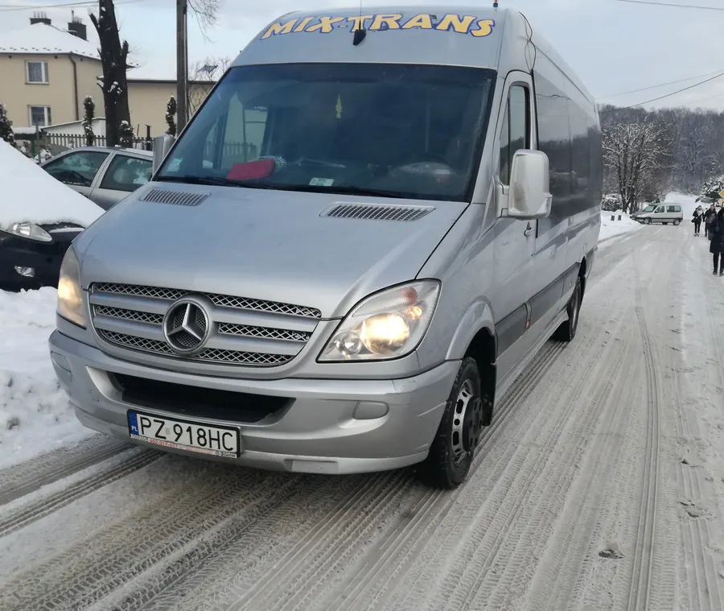
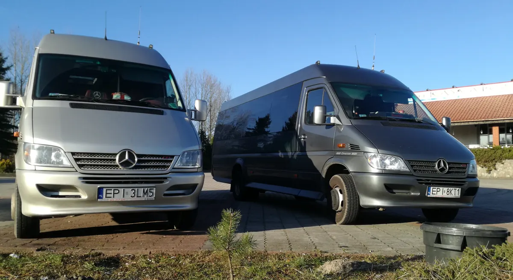
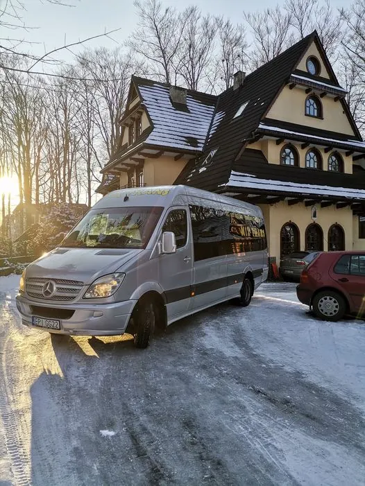
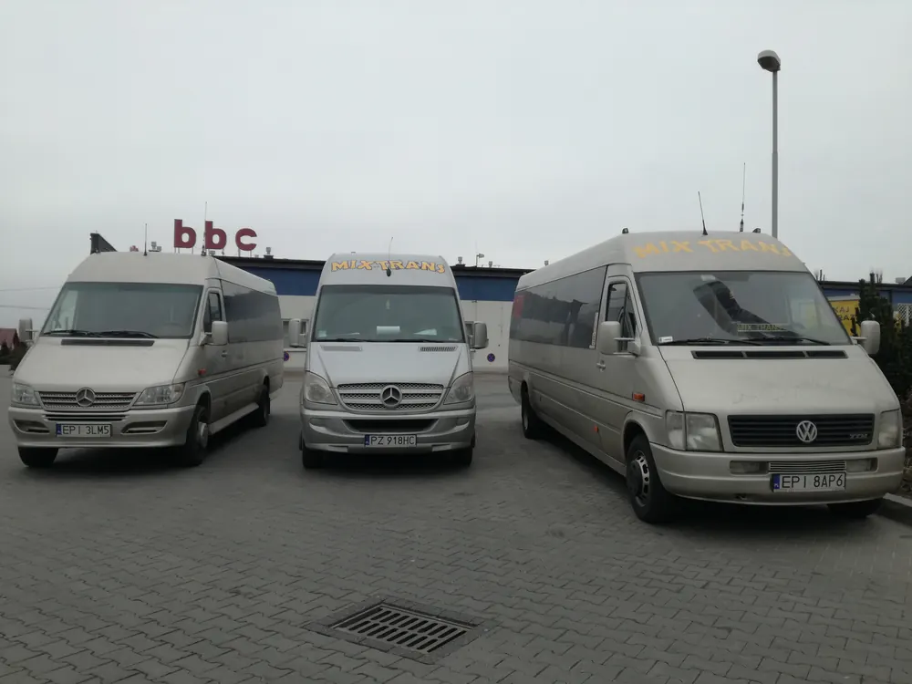
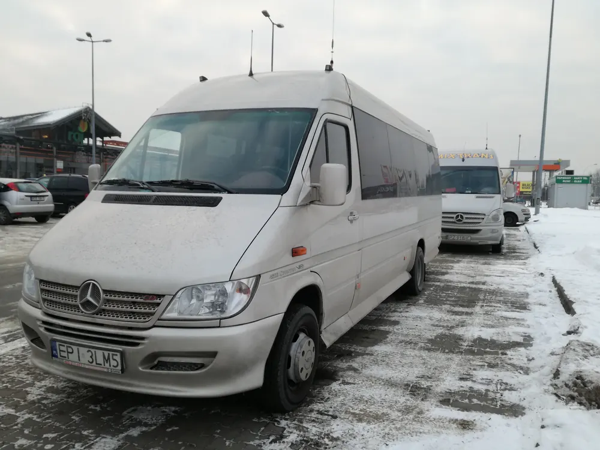
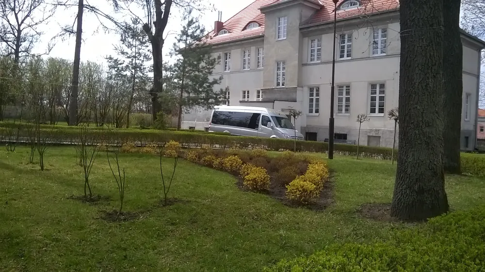
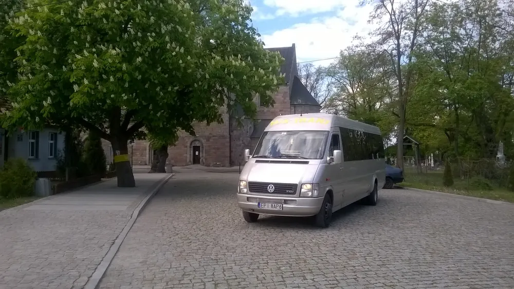
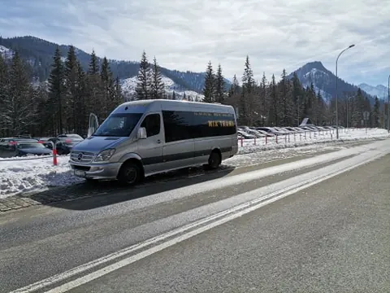

Z nami dojedziesz bezpiecznie
Codzienna linia Piotrków Trybunalski - Srock - Łódź i busy z kierowcą na wesela, koncerty, kolonie i wyjazdy firmowe.
Linia Piotrków Trybunalski - Srock - Łódź
Busy kursują od poniedziałku do piątku, nie kursują w święta. Godziny poniżej to odjazdy z przystanków początkowych.
Z Łodzi do Piotrkowa
Przystanek WPA Łódź Fabryczna, stanowisko nr 12S kurs Piotrków - Srock najbliższy odjazd
- Od 2010 r.w przewozie osób, z siedzibą w Woli Moszczenickiej
- Zezwolenie nr 011/205na przewozy regularne, Urząd Marszałkowski w Łodzi
- Licencjana krajowy transport drogowy osób
- Pn-ptkursy w obu kierunkach od rana do wieczora

Bus z kierowcą na każdy wyjazd
Wozimy firmy, szkoły, osoby prywatne, biura podróży i grupy zorganizowane. Podaj trasę i termin, resztę bierzemy na siebie.
- Kolonie i wakacje
- Wesela
- Koncerty i imprezy sportowe
- Przewozy pracownicze
- Targi i szkolenia
- Pielgrzymki
- Inne przewozy okazjonalne, w kraju i za granicą
Jak liczymy cenę? Według przejechanych kilometrów i czasu wynajmu busa. Przy stałej współpracy udzielamy zniżek.
Zapytaj o wycenęNasze busy w trasie






Zadzwoń albo napisz
Najszybciej ustalimy przejazd telefonicznie. Zapytanie możesz też zostawić w formularzu.
- 605 943 065 lub 601 130 659
- mix-trans.kontakt@wp.pl
- ul. Klonowa 5, 97-310 Wola Moszczenicka
- facebook.com/Mixtransport